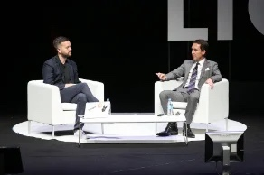
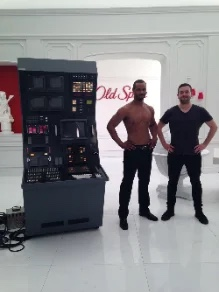
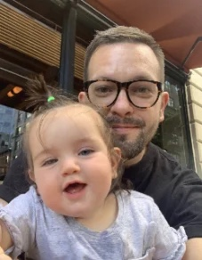

I'm Mark Pytlik, a brand & creative leader based in San Francisco.



I've spent nearly two decades building teams, running businesses, and making award-winning work.
I founded Stink Studios and scaled it to 125+ people, multiple offices and $40M in revenue; led creative at Spotify; and shipped campaigns for virtually every major brand on the planet. I'm a T-shaped leader who's equally comfortable across creative, strategy, operations, and finance. My background in journalism means I'm a critical thinker who brings a sharp, strategic POV to everything I do. I lead by hiring great people, trusting them, and creating conditions to do great work. I care about craft, culture, and the thread that runs from strategy to execution. I'm looking for a senior brand or creative leadership role where building and managing is part of the job.
I lead creative direction and editorial voice for the Steve Jobs Archive, managing a team of roughly ten freelancers across design, development, content creation, writing, and research. Our work spans archival programming, fellowships, and original series with creative luminaries.
I founded Stink Studios as a small interactive production company for Stink Films in London in 2007, and grew it into a full-service creative studio with 125 people, six global offices, and $40M in annual revenue. In our second year we won a Cannes Grand Prix for Philips’ Carousel — the first interactive work ever to receive the honor — and went on to accumulate 50+ Cannes Lions, 25+ D&AD Pencils, and 25+ Webby Awards over the studio’s lifetime. In 2020–2021, I led a full rebrand of the company, including a new visual identity, website, values framework, and our first annual impact report.
After a long relationship with Spotify as a client, they brought me onboard to lead creative for both Artist Marketing and Creator Marketing. I worked in New York and Los Angeles, running teams across 15–20 concurrent workstreams for artists such as Cardi B, Ariana Grande, Twenty One Pilots, Kendrick Lamar, and David Bowie. The output ranged from interactive, branding, and experiential work to television commercials, content, and social.
In my previous life as a journalist, I was a longtime contributor to Pitchfork, a Features Editor at the now-defunct advertising magazine Boards, and the author of a Björk biography called Wow & Flutter. Over that time I conducted more than 200 interviews, with subjects ranging from John Hegarty, Gerry Graf, and Michel Gondry to LCD Soundsystem, Boards of Canada, and Elliott Smith.